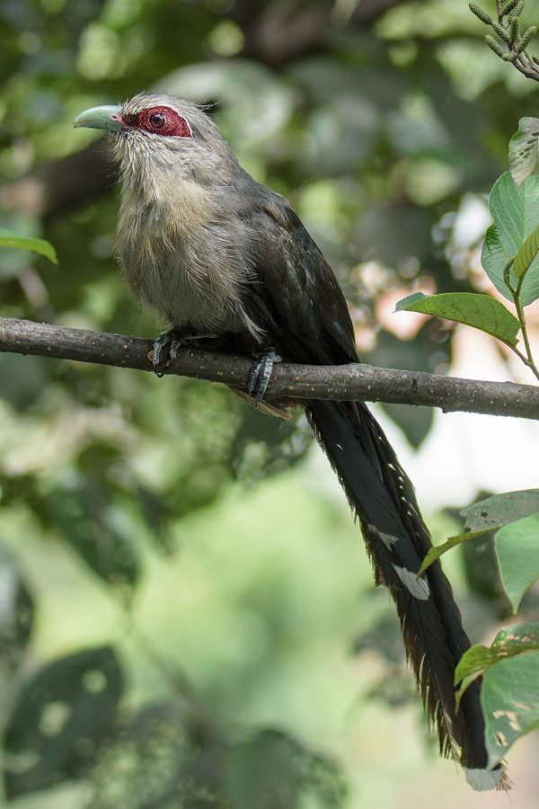

ग्रीन-बिल्ड मालकोहाGreen-billed Malkoha
Rhopodytes tristis · Cuculidae · BRD-0319

- Scientific name वैज्ञानिक नाम
- Rhopodytes tristis (Lesson, 1831)
- Family कुल
- Cuculidae
- Hindi हिंदी
- ग्रीन-बिल्ड मालकोहा
- Local names स्थानीय नाम
- green-billed malkoha
- Status here यहाँ की स्थिति
- native
- Movement आवागमन
- Resident, here all year
- Known from कहाँ दर्ज
- Others have published records from the wider Awadh–Purvanchal plain, none yet from Basti–Ayodhya अवध–पूर्वांचल से दूसरों के प्रकाशित अभिलेख, बस्ती–अयोध्या से अभी नहीं
- IUCN IUCN
- LC
- Review समीक्षा
- not yet reviewed
When to look कब देखें
Present all year. साल भर मौजूद।
Tell it apart from इनसे अलग पहचानें
ग्रीन-बिल्ड मालकोहा / Green-billed Malkoha
Rhopodytes tristis (Lesson, 1831) — Cuculidae
ग्रीन-बिल्ड मालकोहा — तराई और साल के जंगलों के घने झुरमुटों और लताओं के जाल में रहने वाला एक अत्यंत शांत और शर्मीला पक्षी है। यह कोयल परिवार का सदस्य है, लेकिन अन्य कोयल प्रजातियों के विपरीत यह परजीवी नहीं होता और अपना घोंसला खुद बनाता है। इसका शरीर गहरा स्लेटी-हरा और चमकदार होता है, आंख के चारों ओर नंगी लाल त्वचा का एक स्पष्ट घेरा होता है, और चोंच हल्की सेब जैसी हरी होती है। इसकी पूंछ असाधारण रूप से लंबी, चौड़ी और सीढ़ीनुमा होती है जिसके सिरों पर सफेद गोल धब्बे होते हैं। यह घनी लताओं के बीच गिलहरी की तरह सरकते हुए बड़े कीड़े तलाशता है।
Quick Identification त्वरित पहचान
| Feature | Description |
|---|---|
| Habit | Secretive arboreal cuckoo creeping through dense vine tangles |
| Upperparts | Oily dark green with metallic bluish-green sheen on mantle and wings |
| Underparts | Ashy-grey throat and breast washed with ochraceous buff; blackish belly |
| Bill | Heavy, curved, apple-green tinged with red at the base and gape |
| Eye Patch | Conspicuous bare patch of crimson-red orbital skin surrounding the eye |
| Tail | Very long, graduated, dark green-black; all rectrices tipped with white spots |
| Demeanour | Creeping deliberately through dense creepers like an arboreal rodent |
Field tip: Look low down in tangled thickets and wild vine curtains along forest nullahs. The apple-green curved bill, vivid red orbital eye-patch, and massive graduated tail with white tips distinguish this cuckoo immediately.
हिंदी:
इसकी चोंच सेब जैसी हरी और आंख के चारों ओर लाल त्वचा का घेरा होता है।
पंख और पीठ गहरे चमकीले हरे-स्लेटी होते हैं तथा सीना हल्का मटमैला होता है।
इसकी पूंछ बहुत लंबी और चौड़ी होती है जिसके सिरों पर सफेद गोल धब्बे चमकते हैं।
Morphology आकारिकी
Measurements as given by Baker (1927 as Rhopodytes tristis):
| Measurement | Range |
|---|---|
| Wing | 166–180 mm (Baker 1927) |
The Green-billed Malkoha is a slender, long-tailed non-parasitic cuckoo adapted for moving stealthily through dense vegetative tangles. In adult birds, the crown, nape, mantle, and back are dark slate-grey with an oily dark green metallic sheen.
The lores are black, and the forehead feathers bear stiff, bristly black shafts. The chin, throat, and sides of the head are ashy-grey, finely streaked with dark shaft-lines and washed with ochraceous buff on the lower breast, transitioning into blackish-slate on the vent and under tail-coverts.
The bill is stout, curved, and heavy, colored pale apple-green with a reddish tinge around the nostrils and gape. The bare orbital skin surrounding the eye is bright crimson or carmine-red.
The tail is extraordinarily long, broad, and stepped, dark green with a violet gloss, each feather tipped with a prominent white terminal patch. The legs and feet are dull slaty-green or brownish-slate.
Vocalisations. An exceptionally quiet bird that rarely calls; occasionally gives a low, hollow, mournful croak or soft chuckling notes from deep within vine cover.
हिंदी:
इसके पंखों की लंबाई 166 से 180 मिमी होती है।
इसकी लंबी पूंछ में सीढ़ी जैसे लगे पंखों के सिरे सफेद होते हैं।
यह जंगल में बहुत शांत रहता है और कभी-कभार ही धीमी गूंजती आवाज निकालता है।
Behaviour & Ecology व्यवहार और पारिस्थितिकी
Rhopodytes tristis is an elusive, solitary bird that avoids open spaces and sunlight. It inhabits the tangled middle story and subcanopy of dense moist forest, particularly where thick woody climbers and wild grapevines drape over tree crowns.
It moves with astonishing stealth and agility, running and clambering along horizontal limbs and creeping through interlaced vines with fluid movements reminiscent of a tree squirrel. Flight is weak, floppy, and laboured, consisting of brief glides on rounded wings from one thicket to another, usually losing height before scrambling into cover.
हिंदी:
यह पक्षी धूप और खुले स्थानों से बचकर घनी लताओं के बीच छिपा रहता है।
यह पेड़ों की डालियों पर उड़ने के बजाय गिलहरी की तरह तेजी से सरक कर चलता है।
Life Cycle / Phenology जीवन चक्र
Baker (1927, p. 178–179) records that this non-parasitic cuckoo breeds from early April to the end of August. The nest is a platform of twigs lined with green leaves, placed low down in a thick bush, sapling, or bamboo clump. The eggs are chalky white.
हिंदी:
बेकर (1927) के अनुसार इसका प्रजनन काल अप्रैल की शुरुआत से अगस्त के अंत तक होता है। यह जमीन से थोड़ी ऊंचाई पर घनी झाड़ी या बांस के झुरमुट में टहनियों और हरी पत्तियों से घोंसला बनाकर सफेद अंडे देती है।
Host Plants or Prey आहार
The Green-billed Malkoha is an opportunistic, predatory insectivore that hunts among foliage for camouflaged invertebrates:
- Large hairy caterpillars and caterpillars of sphingid moths
- Mantises, phasmids (stick-insects), and large green grasshoppers
- Cicadas, beetles, and wood-boring grubs plucked from bark
- Spiders, centipedes, and occasional small tree frogs
- Ripe soft berries and wild figs taken opportunistically
It stalks prey methodically, freezing motionless before making a lightning jab with its heavy bill to snatch insects off leaves or twigs.
हिंदी:
यह घने पत्तों के बीच छिपे बड़े कीड़े, टिड्डे, सूंडियां और छड़ी-कीट (स्टिक इंसेक्ट) खाता है।
यह शिकार को देखते ही अचानक चोंच मारकर दबोच लेता है।
Predators / Natural Enemies शत्रु
Hawks, owls, and small carnivores take birds of this size or raid low nests. No source opened for this atlas names a specific predator of this species.
हिंदी:
बाज, उल्लू और छोटे मांसाहारी जानवर इस आकार के पक्षियों का शिकार करते हैं या घोंसलों पर हमला करते हैं। इस एटलस के लिए देखे गए किसी स्रोत में इसके किसी विशिष्ट शिकारी का नाम दर्ज नहीं है।
Agricultural / Human Relevance कृषि प्रासंगिकता
The Green-billed Malkoha is insectivorous, feeding principally on grasshoppers, mantises, caterpillars, small lizards, and occasional fruit and seeds (Baker 1927, p. 179). It is protected under the Wildlife (Protection) Act, 1972.
हिंदी:
ग्रीन-बिल्ड मालकोहा एक कीटभक्षी पक्षी है, जो टिड्डों, सुंडियों, छोटी छिपकलियों और कभी-कभार फलों को खाता है (बेकर 1927)। यह वन्यजीव (संरक्षण) अधिनियम, 1972 के तहत संरक्षित है।
Expected Locally स्थानीय रूप से अपेक्षित
Not a field record. Written from published accounts for eastern Uttar Pradesh. No confirmed local sighting yet — if you have seen it, that is what the atlas needs.
अभी तक स्थानीय पुष्टि नहीं। यह विवरण प्रकाशित स्रोतों से है, किसी अवलोकन से नहीं।
Look in dense bamboo gullies, tangled vine thickets, and overgrown nullahs in moist deciduous forest tracts in the Terai.
GBIF holds published records from the wider Awadh–Purvanchal plain, none yet from Basti–Ayodhya.
A first record would be a photograph of the bird with place and date, sent through the About page.
Distribution वितरण
Global range: Resident across northern and northeastern India, Nepal, Bhutan, southern China, Myanmar, and throughout Southeast Asia to Sumatra.
Regional status: Resident in dense moist deciduous forest belts in northern Uttar Pradesh, including Dudhwa, Katarniaghat, and Sohelwa Wildlife Sanctuaries.
हिंदी:
यह भारत, नेपाल, भूटान और दक्षिण-पूर्व एशिया के घने जंगलों में पाया जाने वाला स्थायी पक्षी है।
Research Questions शोध प्रश्न
- Which specific climber and vine species are essential for providing daytime foraging cover for Rhopodytes tristis? / दिन में छिपने और भोजन तलाशने के लिए यह किन लता प्रजातियों पर सबसे अधिक निर्भर रहता है?
- What structural characteristics of understory shrubs determine nest placement success and vulnerability to snakes? / घोंसला बनाने के लिए झाड़ियों की संरचना अंडों की सुरक्षा को कैसे प्रभावित करती है?
- How does the presence of dense bamboo brakes influence territory size along riverine forest margins?
- What is the impact of seasonal forest fires on understory caterpillar abundance and malkoha breeding success?
- Can stealth cameras placed along known vine runways help document cryptic foraging and parental care behaviors? (Photographic records at nests can document clutch size and chick development.)
Similar Species मिलती-जुलती प्रजातियाँ
| Species | How to tell apart | हिंदी | |
|---|---|---|---|
| [[greater_coucal\ | Greater Coucal]] (Centropus sinensis) | Much heavier build; glossy blue-black body with contrasting chestnut wings; heavy black bill; ruby-red eyes | महोख |
| [[lesser_coucal\ | Lesser Coucal]] (Centropus bengalensis) | Smaller size; dark brown and chestnut plumage; ungraduated tail; frequents wet grasslands rather than forest lianas | छोटा महोख |
Field rule: The slender greenish-grey body, bright apple-green bill, crimson orbital skin, and long graduated tail with white spots distinguish the Green-billed Malkoha from all heavy-bodied coucals.
हिंदी:
महोख आकार में भारी होता है और उसके पंख चमकीले कत्थई रंग के होते हैं जबकि चोंच काली होती है।
Taxonomy & Classification वर्गीकरण
Original description. Described by René Primevère Lesson in 1831 in Traité d'Ornithologie (vol. 1, p. 182), under the basionym "Melias tristis". Formerly treated under Rhopodytes tristis by Baker (1927). Evaluated on the IUCN Red List under Phaenicophaeus tristis.
Subspecies. Multiple subspecies are recognized across the Oriental region; the northern Indian subspecies is Rhopodytes tristis tristis (Lesson, 1831).
Family and order placement. Order Cuculiformes; family Cuculidae (cuckoos, coucals, and malkohas).
IUCN status rationale. Evaluated as Least Concern (LC) by the IUCN Red List due to an extremely wide geographical distribution and stable population trends in protected forests.
हिंदी:
लेसों ने 1831 में इसका वर्णन किया था। यह कुकुलिडे कुल का सदस्य है और वैश्विक स्तर पर सुरक्षित माना जाता है।
Photo Gallery फोटो गैलरी
No photos yet — add field photos to media/species/green_billed_malkoha/ and run node scripts/sync_photos.js.
Photos needed आवश्यक फोटो
- [ ] Adult bird creeping through vine tangle (लताओं के बीच सरकता वयस्क पक्षी)
- [ ] Profile showing apple-green bill and red eye patch (हरी चोंच और लाल आंख का घेरा दिखाता चित्र)
References संदर्भ
- Lesson, R. P. (1831). Traité d'Ornithologie, vol. 1. F. G. Levrault, Paris, p. 182 (as "Melias tristis").
- Baker, E. C. S. (1927). The Fauna of British India, Including Ceylon and Burma. Birds. Vol. 4. Taylor & Francis, London, p. 178 (as Rhopodytes tristis).
- Ali, S. & Ripley, S. D. (1987). Compact Handbook of the Birds of India and Pakistan. Oxford University Press, New Delhi.
- Grimmett, R., Inskipp, C. & Inskipp, T. (2011). Birds of the Indian Subcontinent. 2nd ed. Christopher Helm, London.
- BirdLife International (2024). Phaenicophaeus tristis. The IUCN Red List of Threatened Species 2024: e.T22684109A264319696.
- GBIF Occurrence Data — Rhopodytes tristis (Lesson, 1830), India (2025).
Source file: species/fauna/birds/green_billed_malkoha.md